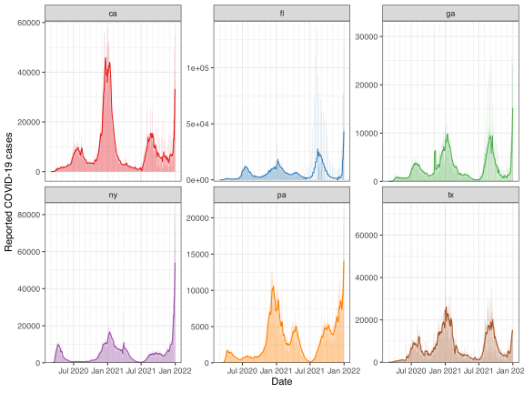
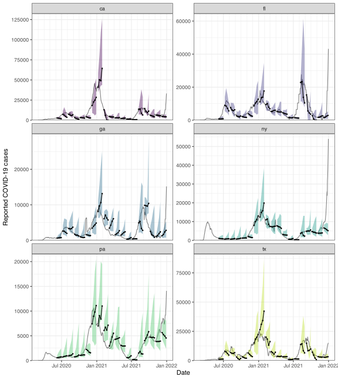

library(epidatr)
library(epiprocess)
library(epipredict)3 Sliding computations
A central tool in the {epiprocess} package is epi_slide(), which is based on the powerful functionality provided in the slider package. In {epiprocess}, to “slide” means to apply a computation—represented as a function or formula—over a sliding/rolling data window. Suitable groupings can always be achieved by a preliminary call to group_by().
By default, the meaning of one time step is inferred from the time_value column of the epi_df object under consideration, based on the way this column understands addition and subtraction. For example, if the time values are coded as Date objects, then one time step is one day, since as.Date("2022-01-01") + 1 equals as.Date("2022-01-02"). Alternatively, the time step can be specified manually in the call to epi_slide(); you can read the documentation for more details. Furthermore, the alignment of the running window used in epi_slide() can be “right”, “center”, or “left”; the default is “right”, and is what we use in this vignette.
As in getting started guide, we’ll fetch daily reported COVID-19 cases from CA, FL, NY, and TX (note: here we’re using new, not cumulative cases) using the epidatr package, and then convert this to epi_df format.
The example data we’ll use is part of the package and has 2,684 rows and 3 columns.
data(jhu_csse_daily_subset)
x <- jhu_csse_daily_subset %>%
select(geo_value, time_value, cases) %>%
arrange(geo_value, time_value) %>%
as_epi_df()3.1 Slide with a formula
We first demonstrate how to apply a 7-day trailing average to the daily cases in order to smooth the signal, by passing in a formula for the first argument of epi_slide(). To do this computation per state, we first call group_by().
x %>%
group_by(geo_value) %>%
epi_slide(~ mean(.x$cases), before = 6) %>%
ungroup()#> An `epi_df` object, 4,026 x 4 with metadata:
#> * geo_type = state
#> * time_type = day
#> * as_of = 2022-05-23 13:17:07.044666
#>
#> # A tibble: 4,026 × 4
#> geo_value time_value cases slide_value
#> * <chr> <date> <dbl> <dbl>
#> 1 ca 2020-03-01 6 6
#> 2 ca 2020-03-02 4 5
#> 3 ca 2020-03-03 6 5.33
#> 4 ca 2020-03-04 11 6.75
#> 5 ca 2020-03-05 10 7.4
#> 6 ca 2020-03-06 18 9.17
#> # ℹ 4,020 more rowsThe formula specified has access to all non-grouping columns present in the original epi_df object (and must refer to them with the prefix .x$). As we can see, the function epi_slide() returns an epi_df object with a new column appended that contains the results (from sliding), named slide_value as the default. We can of course change this post hoc, or we can instead specify a new name up front using the new_col_name argument:
x %>%
group_by(geo_value) %>%
epi_slide(~ mean(.x$cases), before = 6, new_col_name = "cases_7dav") %>%
ungroup()#> An `epi_df` object, 4,026 x 4 with metadata:
#> * geo_type = state
#> * time_type = day
#> * as_of = 2022-05-23 13:17:07.044666
#>
#> # A tibble: 4,026 × 4
#> geo_value time_value cases cases_7dav
#> * <chr> <date> <dbl> <dbl>
#> 1 ca 2020-03-01 6 6
#> 2 ca 2020-03-02 4 5
#> 3 ca 2020-03-03 6 5.33
#> 4 ca 2020-03-04 11 6.75
#> 5 ca 2020-03-05 10 7.4
#> 6 ca 2020-03-06 18 9.17
#> # ℹ 4,020 more rowsSome other information is available in additional variables:
.group_keyis a one-row tibble containing the values of the grouping variables for the associated group.ref_time_valueis the reference time value the time window was based on
Like in group_modify(), there are alternative names for these variables as well: . can be used instead of .x, .y instead of .group_key, and .z instead of .ref_time_value.
3.2 Slide with a function
We can also pass a function for the first argument in epi_slide(). In this case, the passed function must accept the following arguments:
In this case, the passed function f must accept the following arguments: a data frame with the same column names as the original object, minus any grouping variables, containing the time window data for one group-ref_time_value combination; followed by a one-row tibble containing the values of the grouping variables for the associated group; followed by the associated ref_time_value. It can accept additional arguments; epi_slide() will forward any ... args it receives to f.
Recreating the last example of a 7-day trailing average:
x %>%
group_by(geo_value) %>%
epi_slide(function(x, gk, rtv) mean(x$cases),
before = 6, new_col_name = "cases_7dav"
) %>%
ungroup()#> An `epi_df` object, 4,026 x 4 with metadata:
#> * geo_type = state
#> * time_type = day
#> * as_of = 2022-05-23 13:17:07.044666
#>
#> # A tibble: 4,026 × 4
#> geo_value time_value cases cases_7dav
#> * <chr> <date> <dbl> <dbl>
#> 1 ca 2020-03-01 6 6
#> 2 ca 2020-03-02 4 5
#> 3 ca 2020-03-03 6 5.33
#> 4 ca 2020-03-04 11 6.75
#> 5 ca 2020-03-05 10 7.4
#> 6 ca 2020-03-06 18 9.17
#> # ℹ 4,020 more rows3.3 Slide the tidy way
Perhaps the most convenient way to setup a computation in epi_slide() is to pass in an expression for tidy evaluation. In this case, we can simply define the name of the new column directly as part of the expression, setting it equal to a computation in which we can access any columns of x by name, just as we would in a call to dplyr::mutate(), or any of the dplyr verbs. For example:
x <- x %>%
group_by(geo_value) %>%
epi_slide(cases_7dav = mean(cases), before = 6) %>%
ungroup()In addition to referring to individual columns by name, you can refer to the time window data as an epi_df or tibble using .x. Similarly, the other arguments of the function format are available through the magic names .group_key and .ref_time_value, and the tidyverse “pronouns” .data and .env can also be used.
As a simple sanity check, we visualize the 7-day trailing averages computed on top of the original counts.
Code
cols <- RColorBrewer::brewer.pal(7, "Set1")[-6]
ggplot(x, aes(x = time_value)) +
geom_col(aes(y = cases, fill = geo_value),
alpha = 0.5,
show.legend = FALSE
) +
scale_y_continuous(expand = expansion(c(0, 0.05))) +
geom_line(aes(y = cases_7dav, col = geo_value), show.legend = FALSE) +
scale_fill_manual(values = cols) +
scale_color_manual(values = cols) +
facet_wrap(~geo_value, scales = "free_y") +
scale_x_date(minor_breaks = "month", date_labels = "%b %Y") +
labs(x = "Date", y = "Reported COVID-19 cases")
As we can see from the center top panel, it looks like Florida moved to weekly reporting of COVID-19 cases in summer of 2021, while California occasionally reported negative cases counts!
3.4 Running a local forecaster
As a more complex example, we preview some of the functionality of {epipredict} described in future chapters, and use a forecaster based on a local (in time) autoregression or “AR model”. AR models can be fit in numerous ways (using base R functions and various packages), but here we the arx_forecaster(), implemented in {epipredict} both provides a more advanced example of sliding a function over an epi_df object, and it allows us to be a bit more flexible in defining a probabilistic forecaster: one that outputs not just a point prediction, but a notion of uncertainty around this. In particular, our forecaster will output a point prediction along with an 90% uncertainty band, represented by a predictive quantiles at the 5% and 95% levels (lower and upper endpoints of the uncertainty band).
The function signature below, is a probabilistic AR forecaster. The lags argument indicates which lags to use in the model, and ahead indicates how far ahead in the future to make forecasts (both are encoded in terms of the units of the time_value column; so, days, in the working epi_df being considered in this vignette).
arx_forecaster <- function(
epi_df,
outcome, # the outcome column name in `epi_df`
predictors, # a character vector, containing 1 or more predictors in `epi_df`
trainer = quantile_reg(),
args_list = arx_args_list(
lags = c(0, 7, 14),
ahead = 7,
levels = c(0.05, 0.95)
)
)We go ahead and slide this AR forecaster over the working epi_df of COVID-19 cases. Note that we actually model the cases_7dav column, to operate on the scale of smoothed COVID-19 cases. This is clearly equivalent, up to a constant, to modeling weekly sums of COVID-19 cases.
fc_time_values <- seq(
from = as.Date("2020-06-01"),
to = as.Date("2021-12-01"),
by = "1 months"
)
fcasts <- epi_slide(
x,
~ arx_forecaster(
epi_data = .x,
outcome = "cases_7dav",
predictors = "cases_7dav",
trainer = quantile_reg(),
args_list = arx_args_list(ahead = 7)
)$predictions,
before = 119,
ref_time_values = fc_time_values,
new_col_name = "fc"
)
# grab just the relevant columns, and make them easier to plot
fcasts <- fcasts %>%
select(
geo_value, time_value, cases_7dav,
contains("_distn"), fc_target_date
) %>%
pivot_quantiles(contains("_distn"))
fcasts#> # A tibble: 114 × 7
#> geo_value time_value cases_7dav fc_target_date `0.05` `0.5` `0.95`
#> <chr> <date> <dbl> <date> <dbl> <dbl> <dbl>
#> 1 ca 2020-06-01 2655. 2020-06-08 1940. 2694. 3840.
#> 2 fl 2020-06-01 726. 2020-06-08 558. 747. 1290.
#> 3 ga 2020-06-01 643. 2020-06-08 520. 638. 1083.
#> 4 ny 2020-06-01 1278. 2020-06-08 821. 1044. 1864.
#> 5 pa 2020-06-01 603. 2020-06-08 450. 570. 1080.
#> 6 tx 2020-06-01 1002. 2020-06-08 716. 1134. 1950.
#> # ℹ 108 more rowsNote that here we have used an argument ref_time_values to perform the sliding computation (here, compute a forecast) at a specific subset of reference time values. We get out 4 new columns: fc_target_date, 0.05, 0.5, 0.95 that correspond to the date the forecast is for (rather than the date it was made on, the point forecast, and the lower and upper endpoints of the 95% prediction band.1
To finish off, we plot the forecasts at some times (spaced out by a few months) over the last year, at multiple horizons: 7, 14, 21, and 28 days ahead. To do so, we encapsulate the process of generating forecasts into a simple function, so that we can call it a few times.
k_week_ahead <- function(ahead = 7) {
epi_slide(
x,
~ arx_forecaster(
epi_data = .x,
outcome = "cases_7dav",
predictors = "cases_7dav",
trainer = quantile_reg(),
args_list = arx_args_list(ahead = ahead)
)$predictions,
before = 119,
ref_time_values = fc_time_values,
new_col_name = "fc"
) %>%
select(
geo_value, time_value, cases_7dav, contains("_distn"),
fc_target_date
) %>%
pivot_quantiles(contains("_distn"))
}
# First generate the forecasts, and bind them together
z <- map(c(7, 14, 21, 28), k_week_ahead) %>% list_rbind()Then we can plot the on top of the observed data
Code
ggplot(z) +
geom_line(data = x, aes(x = time_value, y = cases_7dav), color = "gray50") +
geom_ribbon(aes(
x = fc_target_date, ymin = `0.05`, ymax = `0.95`,
group = time_value, fill = geo_value
), alpha = 0.4) +
geom_line(aes(x = fc_target_date, y = `0.5`, group = time_value)) +
geom_point(aes(x = fc_target_date, y = `0.5`, group = time_value), size = 0.5) +
# geom_vline(data = tibble(x = fc_time_values), aes(xintercept = x),
# linetype = 2, alpha = 0.5) +
facet_wrap(vars(geo_value), scales = "free_y", nrow = 3) +
scale_y_continuous(expand = expansion(c(0, 0.05))) +
scale_x_date(minor_breaks = "1 months", date_labels = "%b %Y") +
scale_fill_viridis_d(guide = "none", end = .9) +
labs(x = "Date", y = "Reported COVID-19 cases")
Two points are worth making. First, the AR model’s performance here is pretty spotty. At various points in time, we can see that its forecasts are volatile (its point predictions are all over the place), or overconfident (its bands are too narrow), or both at the same time. This is only meant as a simple demo and not entirely unexpected given the way the AR model is set up. The epipredict package, offers a suite of predictive modeling tools that improve on many of the shortcomings of the above simple AR model (simply using all states for training rather than 6 is a huge improvement).
Second, the AR forecaster here is using finalized data, meaning, it uses the latest versions of signal values (reported COVID-19 cases) available, for both training models and making predictions historically. However, this is not reflective of the provisional nature of the data that it must cope with in a true forecast task. Training and making predictions on finalized data can lead to an overly optimistic sense of accuracy; see, for example, (McDonald et al. 2021) and references therein. Fortunately, the epiprocess package provides a data structure called epi_archive that can be used to store all data revisions, and furthermore, an epi_archive object knows how to slide computations in the correct version-aware sense (for the computation at each reference time \(t\), it uses only data that would have been available as of \(t\)). We will revisit this example in the archive vignette.
If instead we had set
as_list_col = TRUEin the call toepi_slide(), then we would have gotten a list columnfc, where each element offccontains these results.↩︎